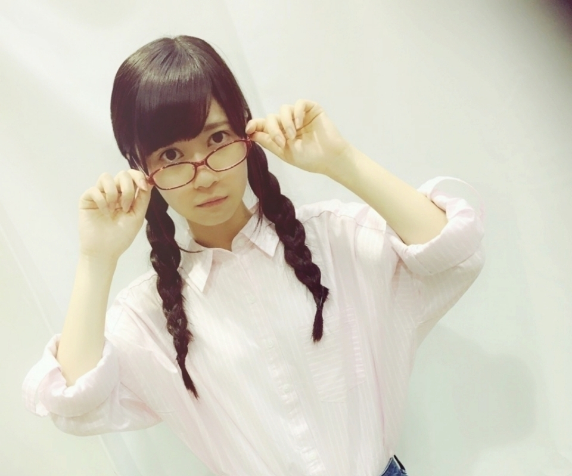
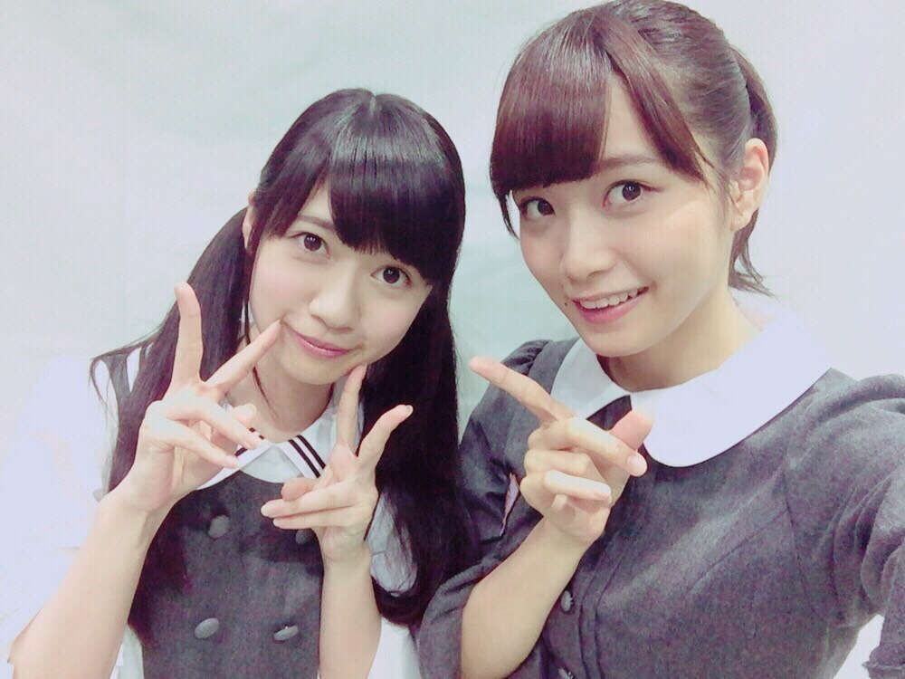
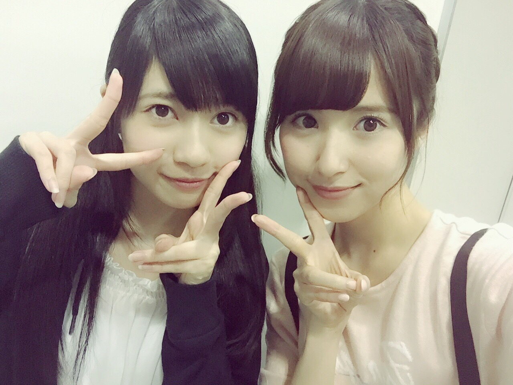
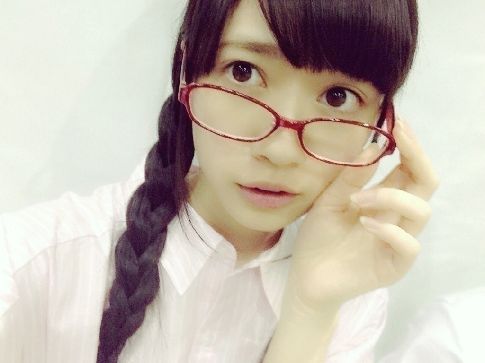

2015/0510Sun→こっちのイメージ
おはようございます
こんにちは
こんばんは
寺田 蘭世です

12thシングル個別握手会では
2部制に復活しました
関東では3部 5部
4部飛んで5部なので
お間違えのないように( ..)``
５部は
割と遅めの時間で
来れないよーって方居らっしゃったと思いますが、今回は３部も
あるので！！
地方は5部です
宜しくお願い致します。
11枚目の個別では
この会場も完売だねって
たくさんの方におめでとうって
言ってもらえたのが
すごく嬉しかったです
はじめましてさんもお会いできて
昔、２部制だった頃は
何回も列が途絶え
悲しい事もありましたが
この期間で
グーンと成長できたと
感じられました、、、( ..)``
また、２部制に戻るという事で
皆さん来てくれるかなーって
心配してます。
私は心から握手会を
楽しんでいるのでそれが
伝わればなーっと
思っております
これからも
宜しくお願い致します
まだ、残りの会場も
楽しみです(´｡･o･｡｀)ワクワク
あと1つ思った事
9月22日私の誕生日の1日前、、、
特別な日になりそうだなって
勝手ながらすでに
ドキドキしてます( ..)``
お洋服どうしようかなーとか
すでに悩んでる
あと、何ヶ月
何があるか分からないのに、、、
だいぶ先の事なのに
ましゅまろんって名前なのに、
マシュマロが
あまり食べられません。
オススメのマシュマロの食べ方教えてください！
→私はよく焼きます
焼いたら3000倍美味しいよ♪
あーーん
とかしてもらったら？！
よろしいのではないでしょうか
こんにちは！初コメです\(＾＾)/毎朝通学のとき、ボーダーを聴いて勇
気もらってます！！！
→はじめまして
テラダです♪
ボーダーすごくいい曲ですよね
私も歌詞を見ながら
聴くと更に歌詞の言葉の１つ１つが
感じられていいなーって
少しでも元気になればなと！！！！
これからも
宜しくお願い致します(｡>_<｡)
二期生の中では
ダントツらんぜ推しだから☆
わたしと年齢そんな変わんないのに
らんぜはだいぶ
しっかり者だ〜(o^-^)
ちなみにわたしは18歳の
看護学生☆
らんぜが
センターに立てる日を楽しみ
にしてるからね(((o( ˙-˙ *))o)))
あさちゃん。
→わーありがとうございます
看護学生かっこいいな♪
あさちゃん。
本当にありがとう
私も頑張るね(´｡･o･｡｀)
2000年9月21日生まれです。
どうせなら、
らんぜと
同じ誕生日が良かったよぉ〜。
受験生なので
握手会とかには行けないけど遠くから応援するよ！
→２０００年うまれ？！
お若い、、、
年下さんかぁーー！！
受験頑張ってね
お姉さん応援してます( ..)``
また、大きくなったら会いに来てね
待ってます！！！
らんぜー♡ヒロシです！
アンダラ本当に
最高だったよー！♡
今から次のライブが
楽しみすぎるღ˘ ˘ற
らんぜのこと
職場でめちゃくちゃアピールしてて、みんなで応援してます♡笑
てかコメント返しいただいてる
方たちが
うらやましすぎるよーう
( ´•̥̥̥ω•̥̥̥` )
誕生日前の握手会行きたい！♡
→っという事でコメント返しさせて頂きました！！
お仕事もがんばってくださいね
お誕生日前の9月22日の握手も
待ってるね(´｡･o･｡｀)
らんぜの血液型〜きまー？(ω･ )ゝ?らんぜー！
→そうですね、、、笑
血液型わか らんぜなのです
皆さんに質問
私何型ぽいですか？
この質問なかなか面白いですね
らんぜって
すごい熱い子なんだね。。。
ブログ読んでて
感動しました、
今度初めて握手会
行ってみようかな...
こんな俺でもらんぜと話せるかな？
俺のらんぜへの勢いとまらんぜ！
これからも応援してるよ(￣▽￣)
1日1日頑張ろう( ´ ▽ ` )ﾉ
→こんな俺でもなんて！！
そんなそんな( ..)``
ブログ読んで下さって
ありがとうございます！！
これからも宜しくね！
１日１日大切に頑張ろー
野球○
BS朝日｢野球大好き！集まれ！侍
ジャパン｣
ＢＳになってからの
侍ジャパン初収録は
ちょっぴりドキドキしたな( ..)``
でもこの番組の
特に中学生、小学生が
ストイックに野球に取り組んでる
姿を間近で感じられるのが
好きです。
何事にも全力っていうのが
いいなーっと思います
北野氏とキャッチボールの
練習したいねって話してました
私も本当に運動したことなくて
ボールを飛ばす力が
よわよわなので練習してみたい！
全国握手会 横浜○
深川さんのブログ
すごく嬉しかったです！！！！

ペアは深川さん
もう、深川さんが聖母すぎて
はじめから最後まで
お隣にいて
癒やされました、、、( ..)``ふわ
この日私は
深川さん推しに
傾きました！！！
深川さんファンの方も
優しくてのほーんとした方が
多いイメージで
皆さん優しかった
本当にありがとうございました！
ソニレコ暇つぶしTV
今月お当番でぷるてんと申します
深川さんにつけてもらった
ぷるてん
ぷるってなんか響きが可愛らしくて
お気に入りです
個別握手会 横浜○
この日は
珍しくショートパンツ
恥ずかしかったです(｡>_<｡)
なんでこの服装になったのかは
モバメで書きました
そして、約束のメガネでした
ファンの方も眼鏡かけてくれていて
すごく楽しかった♪
メガネ好評でよかったです
でも、この日もありがたい事に
完売していたらしく
ブログのコメントで
メガネ姿見たかったのに
握手券がないんだよーーって方が
居て、、、
ここでのコメント次第ですが
今度また
メガネかけようかなーって
考えてます
コメント見て考えますので
宜しくです( ..)``
のぎ天にも一瞬お邪魔しました
カップヌードルミュージアム
まいちゅんとのカフェ
両方楽しかったけど
声が枯れてる日の収録で
心から楽しんでるのに
伝わったか、、、
でも、中元さんに助けられ
まいちゅんにも助けられ
楽しい収録でした！
声が出ないってもどかしいですね
( ..)``
でも、声は１日で治りました
本当あの日だけ急に出なくて
のぎ天さん
ソニレコさん
生ドルさん
声ガザガサで申し訳なかったです
また、普通の声で
リベンジしたいです(｡>_<｡)！
全国握手会 名古屋○

ペアは衛藤さん
衛藤さんとは野球ペア
いつもアドバイス頂いたり
優しい先輩です♪
衛藤さんファンの皆様も
１日ありがとうございました
凄く楽しい時間を過ごせました
これからも
宜しくお願い致します( ..)``
そして、衛藤さんには
お洋服を頂きまして
テラダは着たことない
セクシーな感じです！！！！
いつ着ようかな
握手会で着ようと思ってます
皆さんは
いつがいいと思いますか？
衛藤さんに感謝です( ..)``
では、今回はこのへんで

最後まで読んで下さって
ありがとうございました！
では、
きっと
また( ..)``
お披露目から2年がたちました。
オーディションの期間は
中学2年生だったと思うと
月日はあっという間に
過ぎてくなーっと思います。
成長しつつも
初心の頃の気持ちは忘れず
これからも宜しくお願い致します！
2015/05/10 19:48｜個別ページ｜コメント(1179)